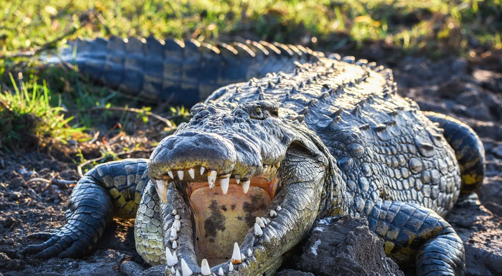

1. Дом Настоящих Крокодилов (Crocodylidae) — Морские Аристократы Их девиз: «Адаптируйся и властвуй». Это самые знаменитые и широко распространенные члены семьи. Гребнистый крокодил (Crocodylus porosus) — Король-мореплаватель. Это не просто крокодил. Это — титан. Крупнейшая в мире рептилия, единственный крокодил, который всерьез освоил жизнь в соленой воде. Представьте себе существо размером с автобус, способное проплыть сотни километров в открытом океане, атаковать акулу и одним ударом хвоста переломить лодку. Гребнистый — это эталон беспощадной силы и абсолютной власти. Его V-образная морда и два гребня над глазами выдают в нем рожденного правителя.

Нильский крокодил (Crocodylus niloticus) — Князь Рек. Если гребнистый — король морей, то нильский — безраздельный хозяин африканских рек. Это классический крокодил из учебников и фильмов ужасов. Мастер засады, социальный хищник с сложной иерархией, живой символ Древнего Египта. Он не такой массивный, как гребнистый, но более мускулистый и, пожалуй, даже более свирепый в защите своей территории.
Острорылый крокодил (Crocodylus acutus) — Изящный Специалист. Обитатель Америки, от Флориды до Перу. Его вытянутая, заостренная морда похожа на пинцет богов. Это не случайность. Такая конструкция идеальна для молниеносного захвата проворной добычи вроде рыб и птиц. Он — фехтовальщик среди кулачных бойцов, демонстрирующий, что в этой семье ценится не только грубая сила, но и точность.